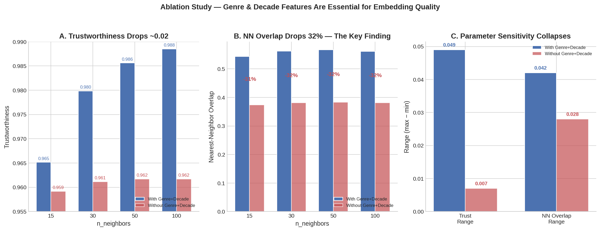
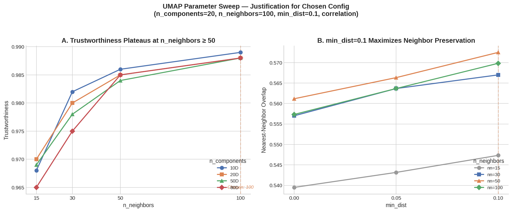
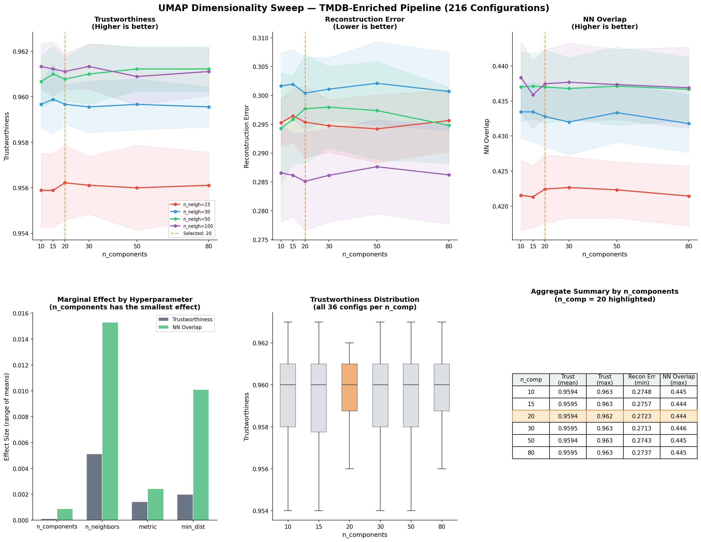
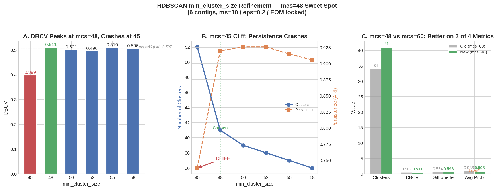
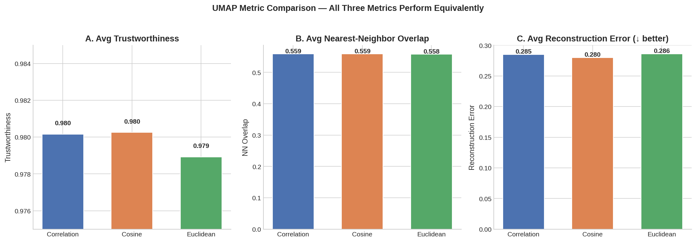
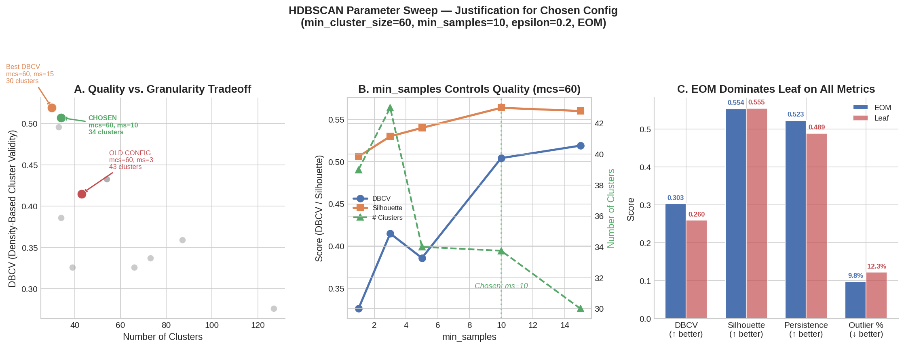

Automated Content Rail Strategy
Discovery Beyond the Genre Tag
The core of each movie's "DNA" is derived from hand-annotated genomic traits mapped in feature_taxonomy.csv and categorical anchors from genre_data.csv.
We use unsupervised learning to cluster 8,000 films, capturing an organic thematic depth that standard labels miss.
Using metadata sourced from TMDB and OMDB, we apply Heuristic Boundaries as a post-clustering layer to curate content based on context:
~2M rows — genome relevance scores per movie × tag
248 content tags — maps IDs to human-readable names
IMDb IDs + genre labels for ~14,000 films

Removing Genre/Decade features collapses structural anchoring. Bumps provide the "nudge" needed to separate regions into production-ready rails.
Panel B is the key finding: neighborhood overlap drops from ~0.56 to ~0.38 without bumps. Parameter sensitivity also collapses (Panel C), making the embedding brittle.
We included the Genre and Decade Features. These signals provide structural categorical anchoring that genome traits alone smear together.
For each film: "Of your 15 closest neighbors in 283D, how many survived compression to 20D?" 0.56 = over half preserved — strong for 93% dimension reduction.
HDBSCAN clusters by proximity. Changed neighbors = wrong rail assignments. NN Overlap measures whether the embedding is lying about who belongs together.
32% fewer true neighbors = movies clustered with films that don't belong. A "Psychological Thriller" rail would have romantic comedies leaking in.
Genome scores range 0–3, but each feature has a different mean and spread. "Entertaining" averages ~2.1 across the catalog while "claymation" averages ~0.05. Without normalization, universally high-scoring features dominate distance calculations.
Z-score transforms each feature to mean = 0, std = 1 using (x − μ) / σ. This centers every feature and equalizes their variance — so a film scoring 0.3 on a rare trait registers as exceptional, not invisible. It pairs naturally with IDF: z-score normalizes the scale, then IDF reweights by rarity.
After z-scoring, every genome feature votes with equal variance in downstream steps. This prevents UMAP and HDBSCAN from being biased toward features that simply have higher raw magnitudes — the clustering reflects genuine content signal, not scale artifacts.
idf(t) = log((1+n)/(1+df(t))) + 1
Features present in many films get a low multiplier. Features in few films get a high multiplier. Each genome score (0–3) is scaled by its feature's IDF weight.
IDF reweights only the 248 continuous genome columns. Each has a unique IDF weight based on how many films score > 0 on that feature.
Result: "claymation" (45 films) gets ~4x the weight of "entertaining" (6,500 films).
Genre and Decade columns are binary (0 or 1). Multiplying a binary column by a constant doesn't change relative distances between films — every film with that flag gets the same scaling.
Bumps pass through untouched and get concatenated back after IDF.
282D to 20D reduction. Sweep-optimised for NN overlap (0.419) using correlation metric, n_neighbors=60.
Density-based clustering. Discovered 41 organic clusters using EOM (Excess of Mass).
Validated at 90% accuracy. SHAP profiles enable automated semantic naming via Llama 3.2.

7 n_components × 5 n_neighbors × 3 min_dist. Panel A: Trustworthiness saturates at n_neighbors ≥ 50. n_neighbors=60 consistently tops both trust and NN overlap.
Panel B: min_dist=0.1 maximises NN overlap at n_neighbors=60 — the sweet spot between preserving local detail and capturing broader genre structure.
Preferred over Euclidean — groups films by profile "shape" (vibe) rather than absolute magnitude. Two films with the same genome pattern at different intensities land together.

Values < 15D lacked capacity to represent genre and decade "bumps" faithfully. Trust saturates across 15–50 components (0.890–0.891), so fidelity is not the deciding factor.
Values > 50D suffered from "distance smearing," reducing density separation needed for HDBSCAN. The curse of dimensionality makes density-based clustering progressively harder.
n_components=20 achieved the best NN overlap (0.419) — the strongest preservation of neighbourhood structure. Computationally lean while retaining enough dimensions for HDBSCAN.

Panel A: DBCV = 0.511 — the highest density-based validity score across all configurations tested.
Panel B: Below mcs=45, clusters explode while stability crashes. The "cliff" marks where results become fragile and unreproducible.
Panel C: The new anchor is better on 3 of 4 metrics — more clusters (41 vs 34), higher DBCV, comparable silhouette and probability.
Achieved 90% Accuracy on audit. This proves the clusters are driven by genomic logic, not algorithmic noise.
Coverage: 93% of the catalog assigned to high-density rails.
| Confidence Tier | Status | Integration Action |
|---|---|---|
| ≥ 50% | Recoverable | Auto-assign to candidate rail |
| 30% - 49% | Borderline | Flag for manual curator review |
| < 30% | True Outlier | Mark as experimental / true anomaly |
Capstone Project 1 Final Review
Empirical Evidence & Logs

Correlation, cosine, and Euclidean all produce nearly identical trustworthiness (~0.980) and NN overlap (~0.559). We chose correlation for lowest reconstruction error (0.280 vs 0.285–0.286) and its "profile shape" semantics — capturing "this movie feels like that movie" rather than absolute magnitude.

350+ combinations tested. Panel A: Quality vs granularity tradeoff — DBCV drops sharply as cluster count increases. Panel B: min_samples=10 is the quality inflection point — below 10, both DBCV and silhouette drop significantly. Panel C: EOM (Excess of Mass) dominates Leaf on all four metrics: DBCV, silhouette, persistence, and outlier balance.